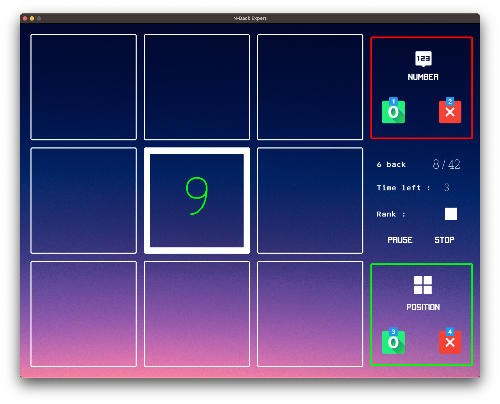

# My Portfolio Website
Welcome to My Portfolio Website!
## About me

Hi there, my name is Jinsung Kim, a curious software developer.
> "People don't care about what you say, they care about what you build." - Mark Zuckerberg
It is motivating that learning how to program opens doors to connect myself with the world. Although I have yet to create a service that reaches millions, every day I am moving one step closer to achieving my goal.
My passion extends beyond simply coding; I deeply enjoy the full process of conceptualizing, designing, building, and improving applications.
> "Everything that We (developers) are doing should flow for user values" - John Carmack
As a software engineer, I view myself as a problem solver first and foremost. I firmly believe that the best developers don't just code—they create thoughtful and innovative solutions that can make a significant impact on the world. That's precisely what I strive to do every day.
Feel free to explore my work, learn about my skills, and get in touch. I look forward to connecting with you!
More quotes I like
> "Any fool can write code that a computer can understand. Good programmers write code that humans can understand." - Martin Fowler
> "A journey of a thousand miles begins with a single step" - Chinese proverb
## Skills
Frontend
- HTML
- CSS
- JavaScript
- Sass
- Bootstrap
Backend
- Python
- NodeJS
- Java
- Django
- PostgreSQL
Others
-  Git
-  Github
-  Postman
-  Linux
-  VS Code
-  Eclipse
-  Figma
<details>
<summary>Random skills</summary>
- Korean (native)
- Piano [^1]
- Pen / Book spin
</details>
## Projects
### 1\. Dual N back | Python | [Download & Code](https://github.com/kjs29/dual_nback)
[](https://youtu.be/WJlfGpfGcow/ "Click to watch a description video on Youtube")
_Participated and won $50 in [Pygames Hackathon](https://devpost.com/software/n-back) by Microsoft_
This project was made after 'N back task' which helps improve working memory and cognitive ability.
- I had lots of fun building the game. While tutorials can provide a foundation, this project underscored the idea that true learning comes through application. It also boosted my confidence in programming.
- Besides improving my problem-solving skills, I acquired experience in various aspects of game development, including implementing pause/resume functionalities, and stop watch-style time controls within the game loop.
- I gained experience in object oriented programming in Python, and learned why object oriented programming is suitable for complex codes.
- As the codes get more complex, I came to deeply think about writing scalable, readable, and clean codes.
### 2\. Portfolio website | HTML, CSS, JavaScript | [Live](#) | [Code](https://github.com/kjs29/portfolio-website/)
It is a website that serves as my portfolio and it is the website you are looking at currently! This website, which models after the MacOS environment, is made with HTML, CSS, and vanilla JavaScript.
[](#)
- I strengthened my frontend skills, especially responsive design and Flexbox in CSS, and JavaScript Document Object Model(DOM) within Web API.
- I learned and implemented good practices such as
- Avoiding global queries, as `document.getElementById()` traverses the entire DOM tree.
- Manipulating classes for styles instead of adding inline styles. This helps with performance, readability, and maintainability.
### 3\. Legal service website | HTML, Bootstrap, Django, PythonAnywhere | [Live](https://www.calgarymobilewills.ca/) | [Code](https://github.com/kjs29/willservice/)
[](https://www.calgarymobilewills.ca/)
This website was made for a side-business with my friend.
- This website is a web application where I implemented both frontend and backend with Django.
- I developed a Django form that sends a PDF document file to clients' emails after they have completed the form.
- I gained experience in deploying to PythonAnywhere.com, and also learned about SEO.
---
[^1]: [https://youtu.be/v5quT3trWvE](https://youtu.be/v5quT3trWvE/)
## Contact
[](https://github.com/kjs29/) [](mailto:jsk.jinsung@gmail.com) [](https://linkedin.com/in/jinsungk/)
Thank you for visiting my website, please contact me! I will be happy to talk with you! 😊
Importing index.html...
Enumerating all objects
Downloading images from resources...
My Portfolio Website
Welcome to My Portfolio Website!
About me
Hi there, my name is Jinsung Kim, a curious software developer.
"People don't care about what you say, they care about what you build." - Mark Zuckerberg
It is motivating that learning how to program opens doors to connect myself with the world. Although I have yet to create a service that reaches millions, every day I am moving one step closer to achieving my goal.
My passion extends beyond simply coding; I deeply enjoy the full process of conceptualizing, designing, building, and improving applications.
"Everything that We (developers) are doing should flow for user values" - John Carmack
As a software engineer, I view myself as a problem solver first and foremost. I firmly believe that the best developers don't just code—they create thoughtful and innovative solutions that can make a significant impact on the world. That's precisely what I strive to do every day.
Feel free to explore my work, learn about my skills, and get in touch. I look forward to connecting with you!
More quotes I like
"Any fool can write code that a computer can understand. Good programmers write code that humans can understand." - Martin Fowler
"A journey of a thousand miles begins with a single step" - Chinese proverb
Skills
Frontend
-
 HTML
HTML
-
 CSS
CSS
- JavaScript
-
 Sass
Sass
-
 Bootstrap
Bootstrap
Backend
-
 Python
Python
-
 NodeJS
NodeJS
- Java
-
 Django
Django
-
 PostgreSQL
PostgreSQL
Others
-
 Git
Git
- Github
-
 Postman
Postman
- Linux
- VS Code
- Eclipse
-
 Figma
Figma
Random skills
- Korean (native)
- Piano [1]
- Pen / Book spin
Projects
1. Dual N back | Python | Download & Code
Participated and won $50 in Pygames Hackathon by Microsoft
This project was made after 'N back task' which helps improve working memory and cognitive ability.
- I had lots of fun building the game. While tutorials can provide a foundation, this project underscored the idea that true learning comes through application. It also boosted my confidence in programming.
- Besides improving my problem-solving skills, I acquired experience in various aspects of game development, including implementing pause/resume functionalities, and stop watch-style time controls within the game loop.
- I gained experience in object oriented programming in Python, and learned why object oriented programming is suitable for complex codes.
- As the codes get more complex, I came to deeply think about writing scalable, readable, and clean codes.
2. Portfolio website | HTML, CSS, JavaScript | Live | Code
It is a website that serves as my portfolio and it is the website you are looking at currently! This website, which models after the MacOS environment, is made with HTML, CSS, and vanilla JavaScript.

- I strengthened my frontend skills, especially responsive design and Flexbox in CSS, and JavaScript Document Object Model(DOM) within Web API.
- I learned and implemented good practices such as
- Avoiding global queries, as
document.getElementById()traverses the entire DOM tree. - Manipulating classes for styles instead of adding inline styles. This helps with performance, readability, and maintainability.
3. Legal service website | HTML, Bootstrap, Django, PythonAnywhere | Live | Code

This website was made for a side-business with my friend.
- This website is a web application where I implemented both frontend and backend with Django.
- I developed a Django form that sends a PDF document file to clients' emails after they have completed the form.
- I gained experience in deploying to PythonAnywhere.com, and also learned about SEO.
Contact
Thank you for visiting my website, please contact me! I will be happy to talk with you! 😊